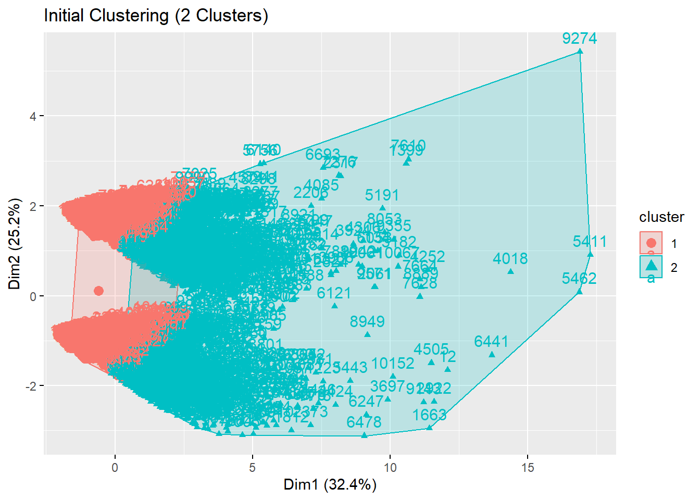
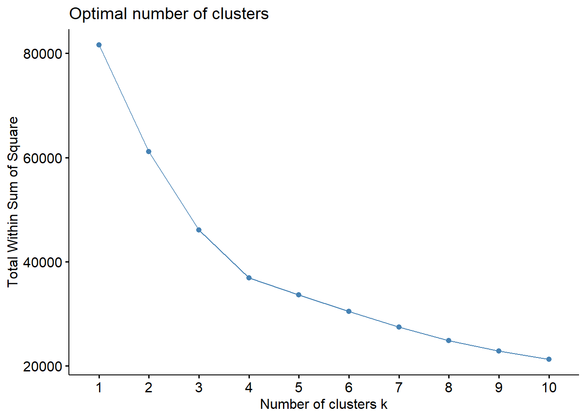
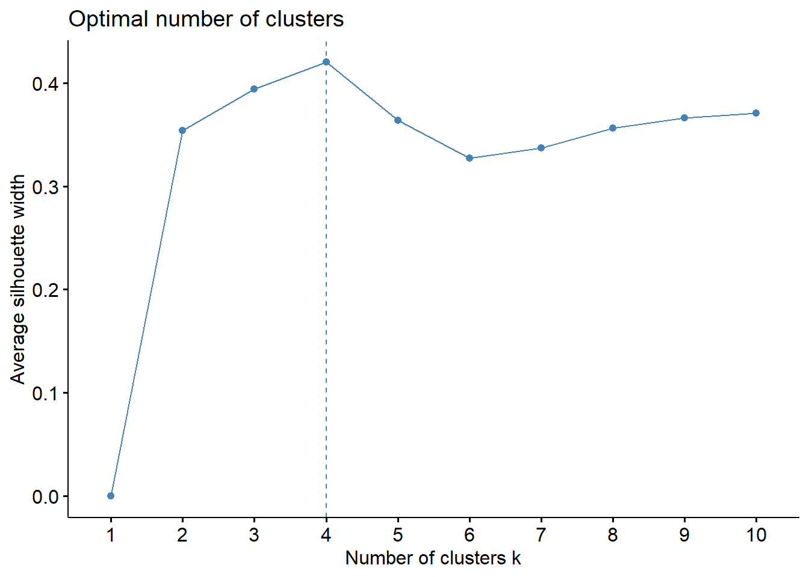
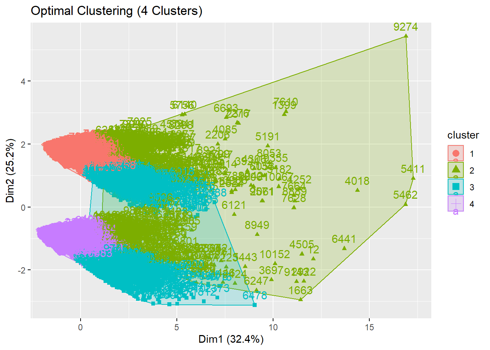
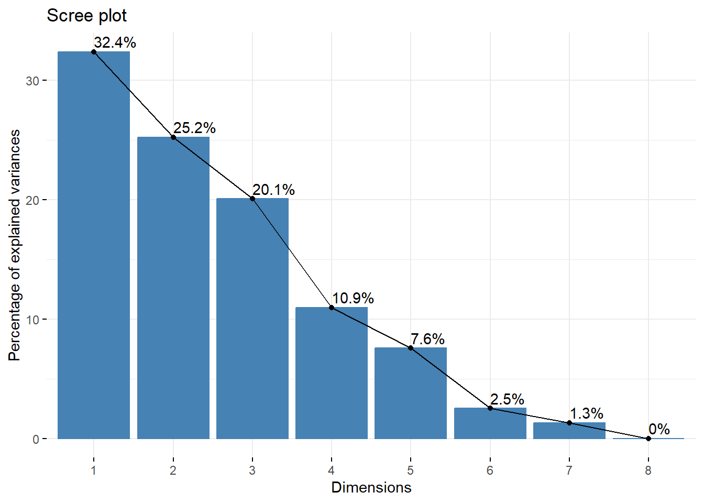
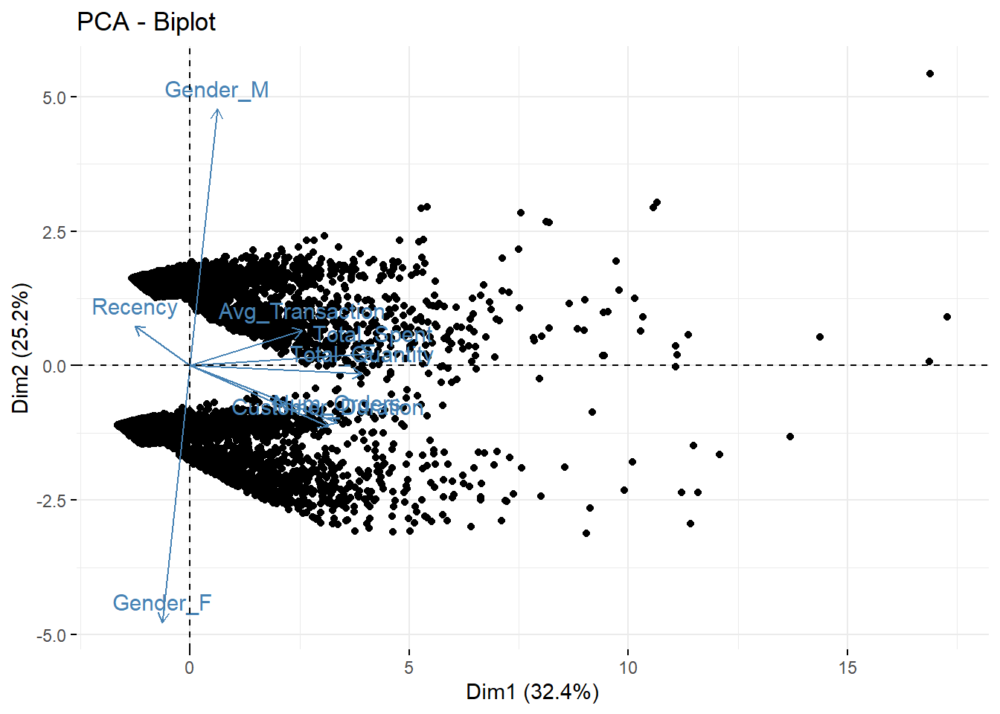
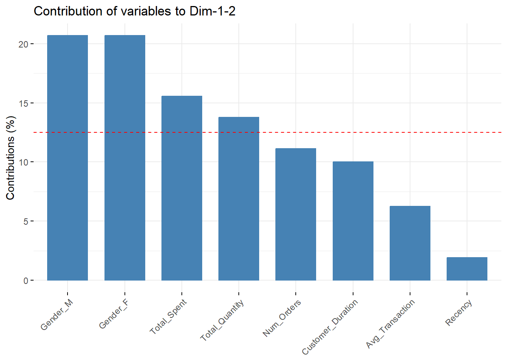

Code
# install.packages("dplyr")
# install.packages("lubridate")
# install.packages("ggplot2")
# install.packages("factoextra")
# install.packages("dbscan")
# install.packages("tidyr")# install.packages("dplyr")
# install.packages("lubridate")
# install.packages("ggplot2")
# install.packages("factoextra")
# install.packages("dbscan")
# install.packages("tidyr")# 1. Setup
ecommerce <- read.csv("C:/Users/james/Downloads/ecommerce2.csv")
View(ecommerce)
# Check for missing values
print("Missing values(before):")[1] "Missing values(before):"print(colSums(is.na(ecommerce))) CustomerID Age Gender Country Source
20 0 0 0 0
OrderID Quantity TransactionDate ProductID Price
0 0 0 0 0
Category
0 # Handle missing values
# Generate unique identifiers for missing CustomerIDs
missing_ids <- is.na(ecommerce$CustomerID)
ecommerce$CustomerID[missing_ids] <- seq(from = max(ecommerce$CustomerID, na.rm = TRUE) + 1,
length.out = sum(missing_ids))
# Convert Age to numeric, replacing non-numeric values with NA
ecommerce$Age <- as.numeric(as.character(ecommerce$Age))
print("Missing values(after):")[1] "Missing values(after):"print(colSums(is.na(ecommerce))) CustomerID Age Gender Country Source
0 0 0 0 0
OrderID Quantity TransactionDate ProductID Price
0 0 0 0 0
Category
0 View(ecommerce)
# Print dimensions
print(dim(ecommerce))[1] 22459 11# 2. Create RFR ecommerceframe with one-hot encoded Gender
library(dplyr)
library(lubridate)
library(tidyr) # For one-hot encoding
RFR <- ecommerce %>%
group_by(CustomerID) %>%
summarise(
Age = max(Age, na.rm = TRUE),
Gender = first(Gender),
Num_Orders = n_distinct(OrderID),
Total_Quantity = sum(Quantity),
Recency = as.numeric(as.Date("2024-01-02") - max(as.Date(TransactionDate, format = "%m/%d/%y"))),
Customer_Duration = as.numeric(max(as.Date(TransactionDate, format = "%m/%d/%y")) - min(as.Date(TransactionDate, format = "%m/%d/%y"))),
Avg_Transaction = mean(Price * Quantity),
Total_Spent = sum(Price * Quantity)
) %>%
# One-hot encode Gender
mutate(Gender = factor(Gender)) %>%
pivot_wider(names_from = Gender, values_from = Gender,
values_fn = length, values_fill = 0,
names_prefix = "Gender_")
View(RFR)# 3.
# Print dimensions of RFR
print(dim(RFR))[1] 10196 10# Create RFR_Master
RFR_Master <- RFR# 4. Initial clustering (2 clusters)
library(factoextra)
set.seed(123)
kmeans_result <- kmeans(scale(RFR[, -c(1, 2)]), centers = 2)
clusterA <- kmeans_result$cluster
# Visualize initial clustering using fviz_cluster
print(fviz_cluster(kmeans_result, data = scale(RFR[, -c(1, 2)])) +
labs(title = "Initial Clustering (2 Clusters)"))
# 5. Determine optimal number of clusters
library(factoextra)
# # Elbow method
print(fviz_nbclust(scale(RFR[, -c(1, 2)]), kmeans, method = "wss", nstart = 15))
# optimal = 4
# # Silhouette method
print(fviz_nbclust(scale(RFR[, -c(1, 2)]), kmeans, method = "silhouette", nstart = 15))
# optimal = 4
# Perform clustering with optimal number
kmeans_result_optimal <- kmeans(scale(RFR[, -c(1, 2)]), centers = 4, nstart = 25)
clusterB <- kmeans_result_optimal$cluster
print(fviz_cluster(kmeans_result_optimal, data = scale(RFR[, -c(1, 2)])) +
labs(title = "Optimal Clustering (4 Clusters)"))
# 6. Outlier analysis using DBSCAN
library(dbscan)
#dbscan model
dbmodel <- dbscan(scale(RFR), eps = 1.3, minPts = 5)
clusterC <- dbmodel$cluster
# visualize
print(fviz_cluster(dbmodel, data = scale(RFR),
show.clust.cent = TRUE,
outlier.color = 'black',
ellipse.type = 'confidence'))
# Add location for each customer
RFR_Master$Location <- ecommerce$Country[match(RFR_Master$CustomerID, ecommerce$CustomerID)]
# Print first 10 records
print(head(RFR_Master, 10))# A tibble: 10 × 11
CustomerID Age Num_Orders Total_Quantity Recency Customer_Duration
<dbl> <dbl> <int> <int> <dbl> <dbl>
1 24 34 1 2 -88 0
2 29 66 1 3 -94 0
3 62 14 1 10 -143 0
4 69 33 1 1 -48 0
5 75 69 1 3 -48 0
6 123 29 1 1 -38 0
7 162 28 1 1 -173 0
8 167 39 1 2 -32 0
9 173 50 1 3 -136 0
10 175 38 1 8 -148 0
# ℹ 5 more variables: Avg_Transaction <dbl>, Total_Spent <dbl>, Gender_F <int>,
# Gender_M <int>, Location <chr># 8. Add cluster assignments to RFR_Master
RFR_Master$clusterA <- clusterA
RFR_Master$clusterB <- clusterB
RFR_Master$clusterC <- clusterC
# Print first 10 records
print(head(RFR_Master, 10))# A tibble: 10 × 14
CustomerID Age Num_Orders Total_Quantity Recency Customer_Duration
<dbl> <dbl> <int> <int> <dbl> <dbl>
1 24 34 1 2 -88 0
2 29 66 1 3 -94 0
3 62 14 1 10 -143 0
4 69 33 1 1 -48 0
5 75 69 1 3 -48 0
6 123 29 1 1 -38 0
7 162 28 1 1 -173 0
8 167 39 1 2 -32 0
9 173 50 1 3 -136 0
10 175 38 1 8 -148 0
# ℹ 8 more variables: Avg_Transaction <dbl>, Total_Spent <dbl>, Gender_F <int>,
# Gender_M <int>, Location <chr>, clusterA <int>, clusterB <int>,
# clusterC <int># 10. Descriptive statistics for chosen clustering approach (e.g., clusterB)
cluster_summary <- RFR_Master %>%
group_by(clusterB) %>%
summarise(across(c(Age, Num_Orders, Total_Quantity, Recency, Customer_Duration, Avg_Transaction, Total_Spent),
list(mean = mean, median = median, sd = sd))) %>%
ungroup() %>%
mutate(Cluster = paste("Cluster", clusterB)) %>%
select(Cluster, everything(), -clusterB)
View(cluster_summary)
# Export results
write.csv(cluster_summary, "C:/Users/james/Downloads/cluster_summary.csv", row.names = FALSE)# 11. Principal Component Analysis
pca_result <- prcomp(scale(RFR[, -c(1, 2)]), center = TRUE, scale. = TRUE)
# Scree plot
print(fviz_eig(pca_result, addlabels = TRUE))
# Biplot
print(fviz_pca_biplot(pca_result, label = "var"))
# Determine number of dimensions for 75% variance
print(summary(pca_result))Importance of components:
PC1 PC2 PC3 PC4 PC5 PC6 PC7
Standard deviation 1.610 1.4202 1.2670 0.9357 0.7777 0.44801 0.3238
Proportion of Variance 0.324 0.2521 0.2007 0.1094 0.0756 0.02509 0.0131
Cumulative Proportion 0.324 0.5761 0.7768 0.8862 0.9618 0.98690 1.0000
PC8
Standard deviation 4.176e-15
Proportion of Variance 0.000e+00
Cumulative Proportion 1.000e+00# Visualize variable contributions
print(fviz_contrib(pca_result, choice = "var", axes = 1:2))
First, we need to load the dataset and address any missing values. There were only 20 missing values in the CustomerID column. To address this, unique ID’s were assigned. The Age column wasn’t being registered as a numeric value so any non-numeric values were converted to NA before being handled. The dataset dimensions were then printed.
The RFM (Recency, Frequency, Monetary) table was created through the grouping of CustomerID, Age, Gender, Num_Orders, Total_Quantity, Recency, Customer_Duration, Avg_Transaction, and Total_Spent. Gender was ‘M’ or ‘F’ so one-hot encoding was used to transform it into binary features (Gender_Female and Gender_Male). The RFM table was named RFR and is used for futher analysis in the code.
The dimensions of RFR were printed and RFR_Master was created as a direct copy of the RFR table.
By using the kmeans clustering algorithm, 2 initial clusters were used on the scaled ecommerce data. This was visualized using the fvzi_cluster function which highlighted the separation of the customers into 2 distinct segments.
The next step was to find the optimal amount of clusters. To do this the elbow and silhouette methods were used. Based on the resulted outputs, it was deduced that 4 was the opitmal amount of clusters. The clustering prcess was then repeated with the new, updated parameter and then visualized.
In order to find outliers in the data, the DBSCAN algorithm was used. This takes into account both the spatial proximity and density of the data points. Based on the visualization, I would again recommend 4 clusters. This analysis helps provided more insights into atypical customer behavior that may need attention (outliers).
Customer locations were added to the dataset by matching CustomerID with the corresponding Country. This gives us the geographical context of the customer. The first 10 records were then printed.
The results from the initial 2-cluster (clusterA), optimal 4-cluster (clusterB), and DBSCAN analyses (clusterC) were added as new columns to the RFR_Master table. The first 10 records were then printed again.
Clusters A, B, and C were analyzed and compared through their visualizations and cluster assignments. The 2-cluster kmeans model (A) gave a very broad segmentations of customers, but lacked really any differentiating behaviors. The 4-cluster model (B) revealed much mor granular groupings, giving highlight to the different spending patterns, recency, and frequency. On the other hand, DBSCAN used density and spacing to identify clusters, which was effective in isolating outliers. However, it was not good in larger groups. At the end, the 4-cluster kmeans model (A) offered the best, interpretable results/segmentation, while DBSCAN was good at finding atypical behavior.
A - Descriptive statistics were used for each variable in each cluster and then organized
B - Description of each segment:
Cluster 1 (Low value / Occassional customers): Lowest average number of orders, total quantity purchased, transaction value, and total spent. Also has the shortest average customer duration. Cluster 2 (high value customers): Highest average total quantity purchased, transaction value, and total spent. Also has a high average number of orders and the second-longest customer duration. Cluster 3 (medium value engaged customers): Highest average number of orders with a moderate average total quantity purchased, transaction value, and total spent. Also has the longest average customer duration. Cluster 4 (medium value occassional customers): Low average number of orders and total quantity purchased. They have a short average custer duration and the second-lowest total spent. They do have the second-highest average transaction value.
C - The results were then exported to a cluster_summary.csv file.
A - principal component analysis requires these features:
-Numeric variables -linear relationships -An adequate sample size (at least 10 per variable) -Variables are of similar scale
B - Number of Dimensions for 75% Variance From the Cumulative Proportion column:
TThe first 3 components cover 77.68% or the variance in the dataset. This meets the threshold for retaining sufficient information of at least 75% while lowering complexity. In the contribution graph, you can easily see that the Gender, total spent, and total quantity are the 3 main factors. The fact that there is a steep drop off in explained variance after the third feature/component (also shown in the scree plot) reinforces the choice to keep only these 3 dimensions.
C - The biplot and contribution bar chart show how each variable influences the principal components:
PC1 (32.4% Variance): Dominated by Total_Spent, Avg_Transaction, and Num_Orders, reflecting customer spending and transaction frequency. PC2 (25.2% Variance): Dominated by Recency and Customer_Duration, indicating time-based behaviors such as loyalty and engagement levels. PC3 (20.1% Variance): Dominated by Age and Total_Quantity, capturing demographic and purchasing behavior patterns. These three dimensions collectively capture spending, time, and demographic trends, providing a simplified yet comprehensive view of the data.
Visualizations to Support Analysis Scree Plot: Confirms that the first three components are sufficient to represent the data while minimizing redundancy. Biplot: Shows the relationship between principal components, variables, and data points. Being able to showing clear variable groupings. Contribution Bar Chart: Highlights the variables most responsible for each dimension. This aids in the interpretation of PC1, PC2, and PC3.